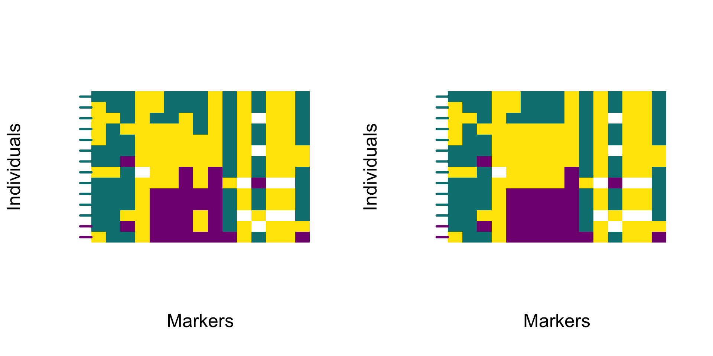

Chapter 8 Smoothing polarised genotypes
After filtering markers by diagnostic index (Chapter 7), genome polarisation analyses can be mapped to physical coordinates to reveal the genomic landscape of barriers to gene flow. Because SNVs are rarely evenly spaced along chromosomes, the polarised signal can fluctuate sharply between adjacent markers. But these fluctuations might not represent signal change, but confluence with standing genetic variation. While, diagnostic index filtering already removed much of the effect of genetic variation orthogonal to the barrier to gene flow, smoothing along mapped distances helps visualise broad ancestry patterns.
8.1 Smoothing across mapped distances
The smoothPolarizedGenotypes function applies kernel smoothing to the polarised genotype matrix, using physical distances between markers rather than their rank order. This approach preserves the broad genomic signal while suppressing local irregularities caused by uneven SNV spacing.
8.1.1 Mapping diagnostic markers
The chromosomal coordinates of diagnostic markers are stored in the output file -includedSites.txt, created during VCF conversion by the function vcf2diem. This file lists all sites retained for polarisation and includes columns CHROM, POS, QUAL from the VCF file and allele0 and allele2 indicating alleles represented by the respective numbers when homozygous.
The positional information needed for smoothing can be extracted directly from this file. The function rank2map converts the ranked order of sites in the polarised genotype matrix into their corresponding chromosomal coordinates based on the -includedSites.txt file. While it is called internally by smoothPolarizedGenotypes, exploring its output helps understand how physical mapping guides the smoothing process.
Full code to prepare data to execute the examples in this chapter
library(diemr)
dat <- system.file("extdata", "myotis.vcf", package = "diemr")
vcf2diem(SNP = dat, filename = "myo", requireHomozygous = FALSE)
set.seed(54869)
res <- diem("myo-001.txt", ChosenInds = 1:14)
gen <- importPolarized("myo-001.txt",
changePolarity = res$markerPolarity,
ChosenInds = 1:14
)
HI <- hybridIndex(gen)# read the includedSites file
bed <- readIncludedSites("myo-includedSites.txt")
# generate mapping of ranks to genome positions
windows <- rank2map("myo-includedSites.txt", windowSize = 150)
# show how window ranges correspond to sites
cbind(windows, bed)
# 1 2 CHROM POS QUAL allele0 allele2
# 1 1 1 KE210828.1 60 . A G
# 2 2 2 KE210828.1 171 . G T
# 3 3 3 KE212673.1 84 . A T
# 4 4 4 KE214857.1 90 . A G
# 5 5 8 KE222443.1 134 . G A
# 6 5 8 KE222443.1 156 . T G
# 7 5 9 KE222443.1 171 . T G
# 8 5 9 KE222443.1 183 . C T
# 9 7 9 KE222443.1 244 . C G
# 10 10 10 KE222801.1 100 . G A
# 11 11 14 KE224361.1 120 . G A
# 12 11 14 KE224361.1 132 . G C
# 13 11 14 KE224361.1 175 . A C
# 14 11 14 KE224361.1 179 . G T
# 15 15 15 KE227386.1 153 . A GEach entry in windows corresponds to one marker in the myo-includedSites.txt file and shows a range of sites that are within the desired windowSize, where the window is centered at the reference site. In practice, rank2map looks for half the windowSize in either direction from the evaluated site, respecting the afinity to unique CHROM values. For genomes composed of multiple scaffolds or chromosomes, smoothing should be performed separately for each element, and rank2map ensures that the windows are set up with respect to CHROM values.
8.1.2 Visual comparison of raw and smoothed results
Smoothing should only be applied to mapped data. Using it on unordered or scaffold‑level datasets can distort the genomic signal.
For smoothing to produce meaningful results, the sites in the original VCF file must be sorted by their genomic coordinates. This is an important consideration of the data prior to vcf2diem conversion. See Chapter (ref?)(vcf2diem).
The function smoothPolarizedGenotypes() then applies a Laplace‑kernel weighted mode (Chapter (ref?)(Laplace)) to neighbouring markers within a defined window.
# smooth the polarised genotypes using a 150 bp window
genSmooth <- smoothPolarizedGenotypes(
genotypes = gen,
includedSites = "myo-includedSites.txt",
windowSize = 150
)The function returns a genotype matrix with the same dimensions and site order as the input, but with smoothed genomic states. These can be used directly in plotPolarized() or in hybrid‑index calculations just like raw genotypes.
The window size is specified in base pairs and should match the expected local scale of linkage. Because recombination rates differ among taxa and genomic regions, it is best to compare several window values empirically. Smaller windows follow local fluctuations more closely, whereas larger windows yield a smoother signal that can merge nearby ancestry blocks. The goal is to retain broad ancestry patterns while avoiding over‑smoothing.
The example below compares raw and smoothed genotype visualisations. The smoothing does not change overall polarity—it only reduces short‑range noise introduced by individual SNVs.

The smoothed profile follows the same general trajectory as the raw data but removes fine‑scale irregularities. The resulting heatmap highlights broad ancestry transitions and provides a clearer view of barriers to gene flow along chromosomes.
8.2 Interpretation and downstream use
Smoothing algorithm implemented in diemr since version 1.4.2 uses a truncated Laplace kernel to calculate weighted mode genomic state for each smoothed site. The Laplace kernel gives the highest weight to nearby markers while gradually down-weighting distant ones, producing smooth but localised transitions in the polarised signal. The truncation limits the influence of distant loci so that ancestry shifts remain aligned with finite physical genomic distance.
Mapping and smoothing improve interpretability of diem output in three ways:
stabilising local genomic states and reducing noise caused by marker spacing,
expressing barrier strength and ancestry transitions in physical coordinates, and
facilitating integration with genomic context such as recombination rate, gene density, or structural features.
When reporting smoothed results, always specify the window size and kernel type used. Smoothing clarifies broad-scale patterns but should not replace marker-level interpretation.
Methodological explanation of the Laplace kernel smoothing
8.2.1 Methodological explanation of the Laplace kernel smoothing
The smoothing algorithm applies a truncated Laplace kernel over physical distance and assigns each site the weighted modal genomic state within the window. This can be described as Laplace-kernel weighted mode smoothing.
Smoothing is applied per chromosome. For each individual \(i\) and focal site \(j\) at position \(x_j\), we consider all neighbouring sites within a symmetric window of half-width \(\text{windowSize}/2\) base pairs. Rather than averaging genotype values, the algorithm computes a kernel-weighted vote over discrete genomic states \(s \in \{_,0,1,2\}\) (unknown genomic state _, homozygous genotypes of two most frequent alleles denoted as 0 and 2, and heterozygots as 1, chapter 3) and assigns the state with the highest weighted support to the focal site.
The goal is to reduce short-range noise caused by uneven marker spacing and stochastic variation, while preserving discrete genomic states that reflect linkage blocks and recombination.
The smoothing method considers a centred physical window of width windowSize (bp), i.e. positions \(x\) with
\[
x \in \left[x_j - \frac{\text{windowSize}}{2}, x_j + \frac{\text{windowSize}}{2}\right].
\]
Within that window, neighbouring markers “vote” for their discrete genomic states \(s\in \{_,0,1,2\}\) with Laplace weights that decay with distance from the focal site. The smoothed value at \(j\) is the weighted mode (state with the largest total weight).
It is important that the smoothing is applied to physical distances between SNVs, so the rank2map internally computes the start and end site indices whose positions fall inside the centred interval for site \(j\).
8.2.1.1 Implemented kernel, truncation and scaling
Let \(d = x - x_j\) be the centred physical distance (bp) from the focal site. The kernel is only ever evaluated inside the centred window; weights for positions outside are never computed or used.
Define the Laplace scale \(b\) as a function of windowSize:
\[
b = \frac{\text{windowSize}}{2 \ln 20}.
\]
This choice guarantees that a two-sided Laplace distribution truncated at \(\pm b\ln 20\) retains 95% of its mass (because \(\Pr(|X|>a)=e^{-a/b}\), so with \(a=b\ln 20\), the tail is \(1/20=0.05)\).
The code evaluates integer-spaced centred offsets \[ x \in {-\lfloor \tfrac{\text{windowSize}}{2}\rfloor,\ldots, -1,0,1,\ldots,\lfloor \tfrac{\text{windowSize}}{2}\rfloor} \] and assigns truncated Laplace weights: \[ w_x = \frac{10}{19} \exp\left(-\frac{|x|}{b}\right),\quad \text{for } |x| \le \frac{\text{windowSize}}{2}. \]
Notes on scaling and normalisation:
- The constant \(10/19\) is an explicit global scaling applied to all in-window weights (see
truncatedLaplace); it is not a per-site normalisation.- Because the algorithm selects a weighted mode, only relative weights matter; any common multiplicative constant cancels.
- There is no per-window re-normalisation; the code compares sums of weights across states directly.
8.2.1.2 Weighted-mode smoothing
For each focal site \(j\) and individual \(i\), we compute state-specific support by summing weights over all neighbours within the centred window whose genotype equals that state: \[ S_s(i,j) = \sum_{k \in \text{window}(j)} \begin{cases} w_{(x_k - x_j)}, & \text{if } g_{i,k} = s, \\ 0, & \text{otherwise.} \end{cases} \]
The smoothed state is the argmax: \[ \tilde g_{i,j} = \arg\max_{s\in \{_,0,1,2\}} S_s(i,j). \]
8.2.1.3 Tie-breaking (exact order used)
If two or more states tie, internal function unbiasedWeightedStateChoice breaks ties in this strict sequence:
- Higher total weight \(S_s(i,j)\) (the primary criterion).
- Higher single-occurrence weight for the state (i.e. the largest \(w\) among markers supporting that state).
- Lexicographic order of the state label (with numeric states treated as character, effectively
"0" < "1" < "2").
This is the complete list; there is no preference for the focal site’s own genotype unless it wins under the rules above.